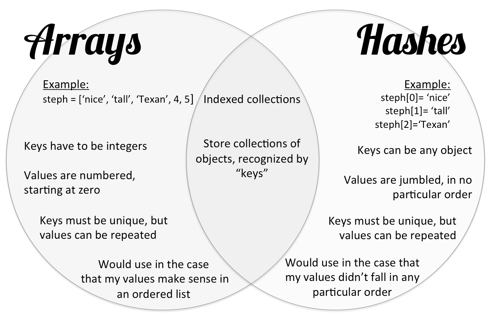

Ruby provides various options for storing information- arrays and hashes are two examples. Similar to when we made the distinction in HTML between ordered and unordered lists, arrays store ordered data whereas hashes can hold more arbitrary data. More specifically, arrays are simple lists with each data point assigned a number, starting at zero. Hashes, due to their unordered nature, can be identified by any object and can hold more than one data point.
There is a difference in syntax that should be noted as well. The array is recognized by its square brackets, hashes by curly brackets. Below is a reference guide on some of the similarities and differences between arrays and hashes, including their respective syntax.
